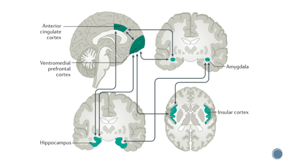
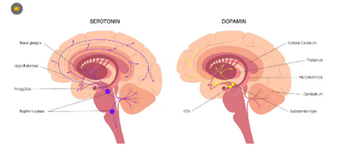
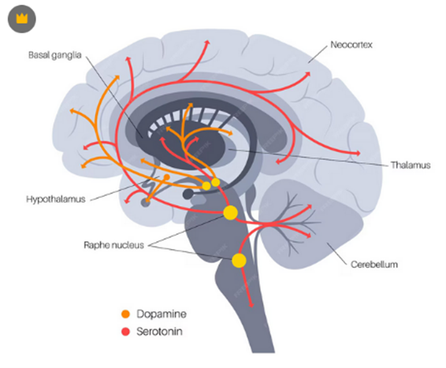
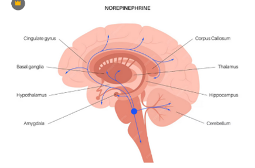
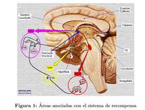
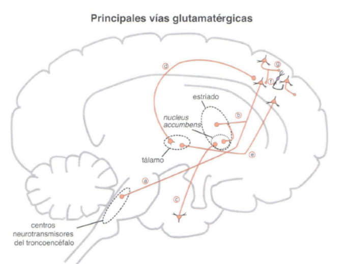

Neurobiología de la Ansiedad
Interactivo — base neuroanatómica y neuroquímicaPulsa la imagen del potro para ver un resumen breve. A continuación encontrarás secciones interactivas con estructuras, neurotransmisores, circuitos y videos.
Toca cada área para ver su función normal y cómo se altera en la ansiedad.
Amígdala
Función: Detección y respuesta ante amenazas; procesamiento de miedo y memoria emocional.
Alteración en ansiedad: Hiperactividad, mayor reactividad ante estímulos amenazantes y conectividad reducida con PFC.
Neuroquímica: GABA ↓, Glutamato ↑, 5-HT disfuncional, NE ↑.
Hipocampo
Función: Memoria contextual y regulación del eje HPA.
Alteración en ansiedad: Volumen reducido en ansiedad crónica, neurogénesis disminuida y vulnerabilidad al cortisol.
Neuroquímica: BDNF ↓, Glutamato ↑.
Ínsula
Función: Interocepción, sensación corporal y consciencia emocional.
Alteración en ansiedad: Hiperreactividad y mayor sensibilidad interoceptiva; conexión aumentada con amígdala y ACC.
Neuroquímica: Serotonina alterada, dopamina disfuncional.
Corteza prefrontal (vmPFC / dlPFC)
Función: Regulación emocional, extinción del miedo y control ejecutivo.
Alteración en ansiedad: Hipofrontalidad (disminución de control sobre la amígdala) y fallo en la extinción de respuestas de miedo.
Neuroquímica: GABA ↓, alteración en 5-HT y conectividad fronto-límbica disminuida.
Cíngulo anterior (ACC)
Función: Evaluación del conflicto, anticipación y regulación autonómica.
Alteración en ansiedad: Mayor actividad en anticipación y cambios en conectividad con amígdala y PFC.
Tálamo
Función: Relé sensorial que filtra y transmite información hacia la corteza y estructuras límbicas.
Alteración en ansiedad: Hiperactividad en respuesta a estímulos amenazantes; modula la sobrecarga sensorial.
Locus Coeruleus (LC) & Tronco
Función: Principal fuente noradrenérgica: regula alerta y vigilancia.
Alteración en ansiedad/pánico: Hiperactividad → NE ↑ → hipervigilancia, taquicardia y respuestas autonómicas.
Núcleos del rafe (serotoninérgicos)
Función: Principal fuente de serotonina hacia córtex, amígdala e hipocampo.
Alteración en ansiedad: Disfunciones en 5-HT que afectan la inhibición amígdala-PFC y la estabilidad emocional.
Pulsa cada tarjeta para ver una descripción breve.
Circuito miedo y ansiedad
Amígdala ↔ Ínsula ↔ ACC ↔ vmPFC: Procesan amenaza, interocepción y regulación. Fallo del control prefrontal = respuestas exageradas.
Circuito monoaminérgico / HPA
LC (NE), núcleos del rafe (5-HT), VTA (DA) y eje HPA (CRH–ACTH–cortisol). Aumento sostenido del eje HPA observado en estudios recientes (IJMS 2025) con influencia de FKBP5 y otros marcadores epigenéticos.






Imágenes: vistas y esquemas relacionados con circuitos límbicos y rutas monoaminérgicas.
Videos: explicaciones y resúmenes visuales. Tamaño y proporciones optimizadas para la página.
La ansiedad surge de interacción entre hiperactividad límbica, fallo del control prefrontal, desequilibrios en sistemas inhibitorios/excitatorios (GABA/Glutamato) y disfunción de monoaminas. La activación sostenida del eje HPA y factores genéticos/epigenéticos (p. ej. FKBP5, BDNF/TrkB) incrementan la vulnerabilidad y la cronicidad.
- IJMS (2025): Desregulación GABA-A; déficit de GAD1; bloqueo GABAérgico revierte ansiolíticos naturales.
- IJMS (2025): Desequilibrio de 5-HT asociado a vulnerabilidad genética (SLC6A4, HTR2A); los ISRS regulan parcialmente la ansiedad.
- IJMS (2025): DA alterada en redes de recompensa y estrés; interacción con serotonina y GABA.
- Neurocircuitería (2025): Hiperactividad del locus coeruleus y tronco encefálico en pánico; NE acopla respuestas autonómicas.
- IJMS (2025): Aumento sostenido de CRH–ACTH–cortisol; influencia de FKBP5 y NTRK3; evidencia epigenética de disfunción.
- IJMS (2025): Incremento glutamatérgico asociado a disfunción GABAérgica; alteración de la homeostasis excitación-inhibición.
- IJMS (2025): Polimorfismos BDNF/TrkB asociados a mayor ansiedad y menor respuesta a antidepresivos.
- IJMS (2025): CRH y AVP sobreactivan el HPA; oxitocina reduce ansiedad y cortisol en situaciones sociales.
- IJMS (2025): Moduladores CB1/CB2 promueven efecto ansiolítico; interacción con serotonina y GABA.